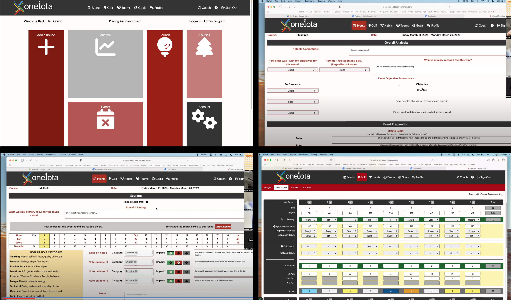
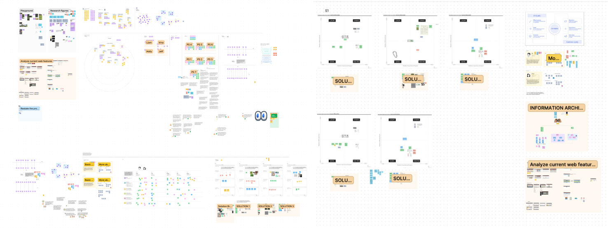
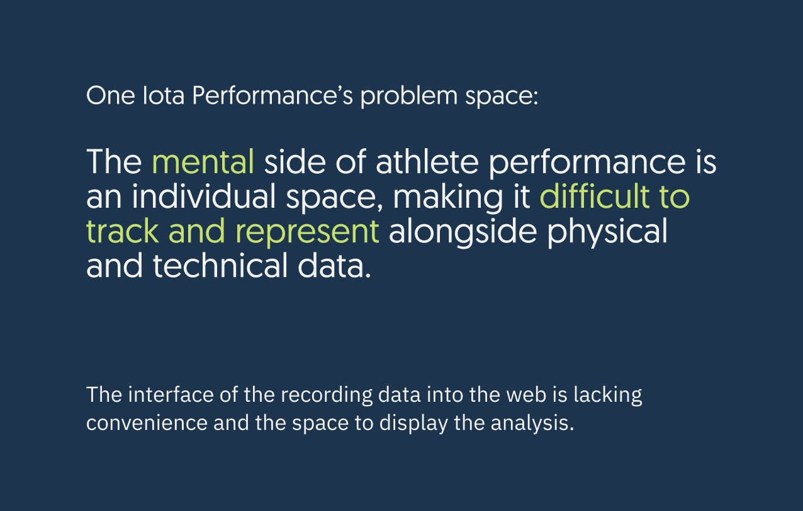
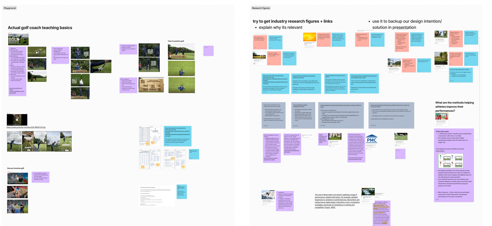
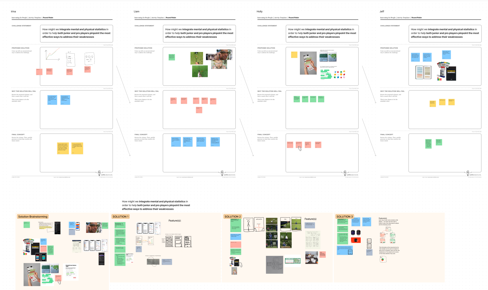
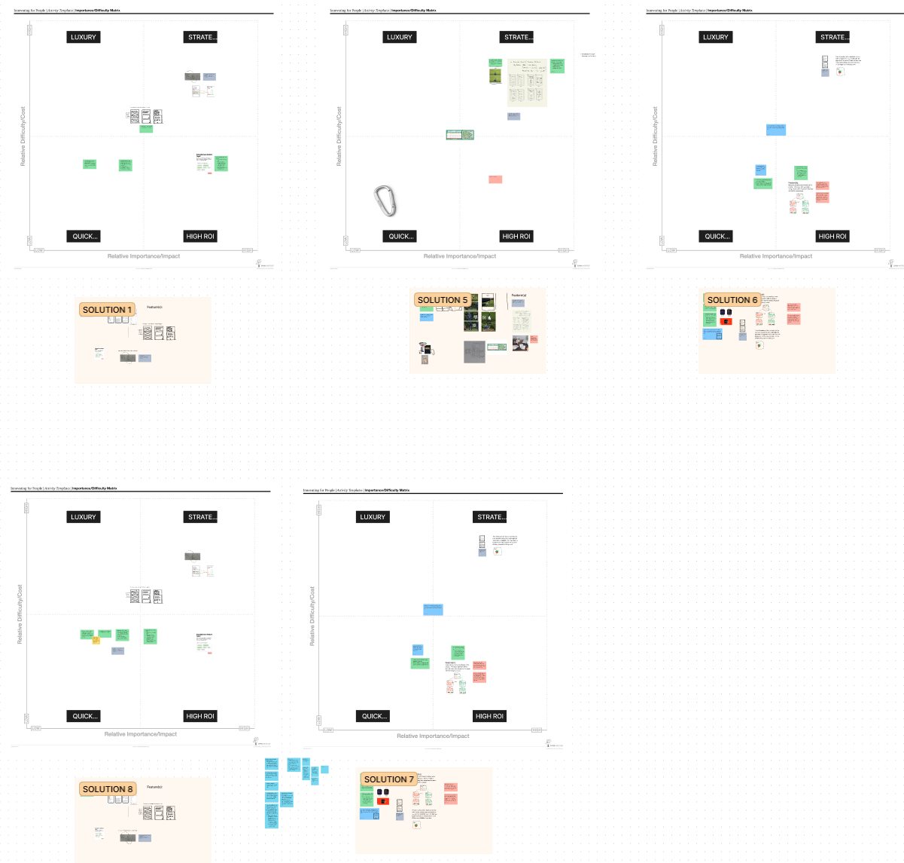

Mobile solution for One Iota Golf Performance's desktop-only software. It allows users to track both physical and mental golf statistics with heavy emphasis on the latter.
This project was designed as part of the Eunoia UX Hackathon and was selected by one judge as the best project within the client category. It was also chosen by our client as the basis for the development of their official mobile app.
1-week design sprint with One Iota Golf Performance for the Eunoia hackathon
interaction design, visual design, research
Figma
Jeff Orsino, Holly Lam, Irina Ng, Nhi Nguyen (mentor)
Ryan came to the Hackathon with a clear goal of having a mobile app designed due a number of reasons, as uncovered through our client interview:
Some of the pages that the desktop software currently has.
Givin the timeline, we decided to split the seven days into three sections: 2 days of research, 2 days of solution-finding, and 3 days of prototyping + preparing the final presentation.
We began the research process by breaking down the problems to determine the problems + priorities and stakeholders. We employed Bullseye Diagramming to rank the problems we organized through Affinity Clustering, and resulted in the following high-priority problems to address:
We then framed the problem area as the following with these insights in mind:
With these problem areas established, my team and I then conducted further research to better understand the domain and gather supporting information.
Once completed, we consolidated our findings and created various solution-based brainstorming. We each tried to come up with bizzare or almost fictitious designs that pushed ourselves to display the sum of all of our work.
We proceeded to compare and determine which of the solutions to move on with by using an Importance/Difficulty Matrix , and eventually settled on the mobile app. Although we weren't surprised that we settled on such a direction, we were able to incorporate insights we gained from ideating a variety of different solutions.

Users can input and view all of their goal progress organized by timeframe (day, week, month). This gives golfers an understanding of what to work towards.
We addressed the problem of users not knowing how to use the software by creating an onboarding experience. This also allows users to customize their preferences to allow for a personalized experience.
Provides a quick summary of recommendations, goals in progrss, and recent journal entries in addition to creating new ones. This addresses the difficulty new users have with understanding the software and statistics.
Provides users with an expansive overview of their journal entries, including the emotions and impact of each day's outcome.
Users can input and view all of their goal progress organized by timeframe (day, week, month). This gives golfers an understanding of what to work towards.